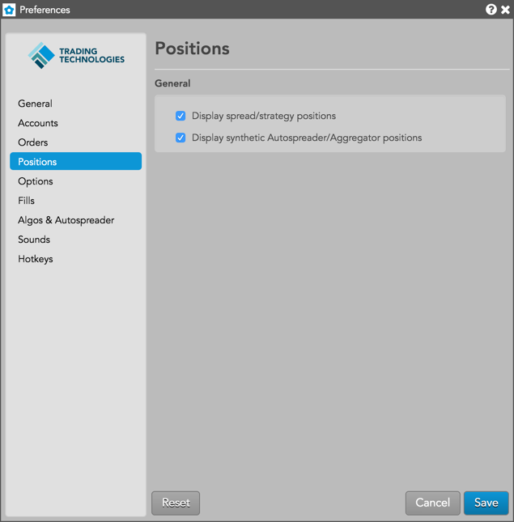

| Preference | Description |
|---|---|
| Display spread/strategy positions | Display the positions for parent spread and strategy orders in a Positions widget. |
| Display synthetic Autospreader/Aggregator positions | Sets whether to show or hide positions for synthetic Autospreader and Aggregator contracts. Uncheck this setting to hide positions for these contracts. |